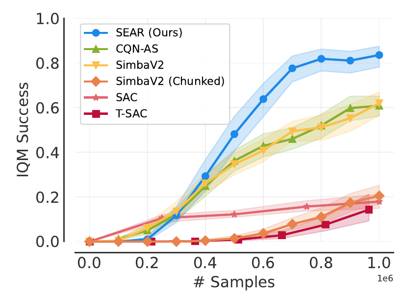
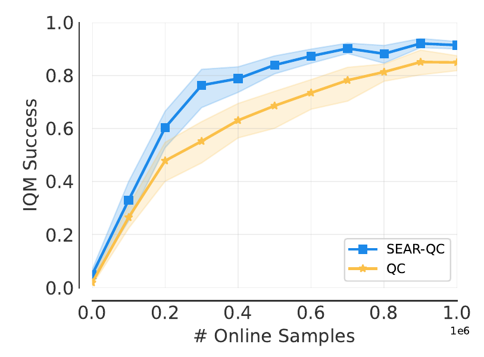
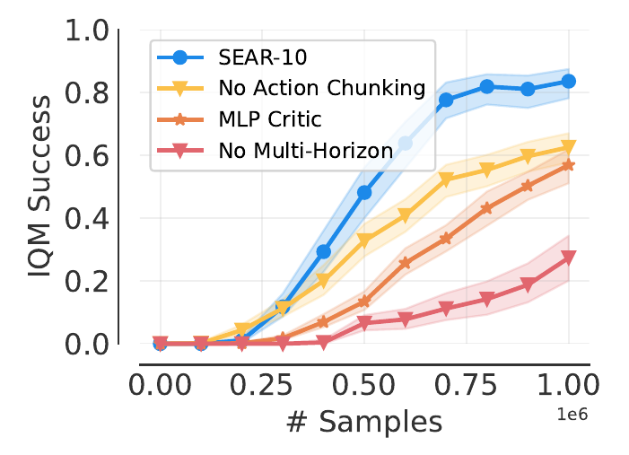
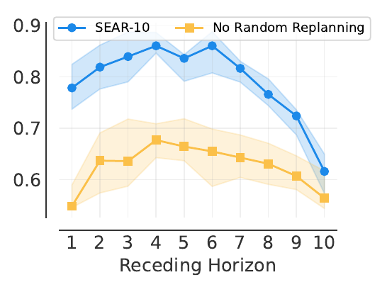
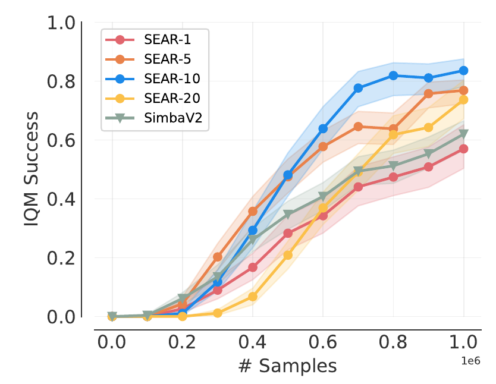
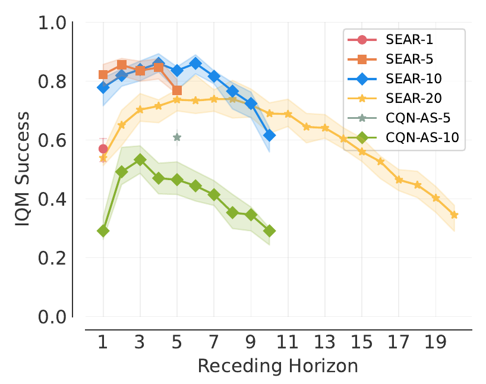

Abstract
Action chunking improves exploration and accelerates value propagation in long-horizon reinforcement learning, but naively applying off-policy methods to the temporally extended action space at reduced decision frequency offsets these gains, leading to poor sample efficiency. Existing online action chunking methods address these issues through computationally expensive critic-only approaches or by relying on offline data. We introduce SEAR, a sample-efficient off-policy algorithm that enables online reinforcement learning with action chunks by addressing both challenges. To handle high-dimensional action sequences, SEAR employs a causal transformer critic trained with multi-horizon targets that provide a training signal for every prefix of an action chunk, effectively increasing the useful gradients per sample. To restore decision frequency, SEAR operates with a receding horizon and random replanning, ensuring uniform state coverage while combining the fast value propagation of large chunks with the reactivity of small ones. SEAR outperforms state-of-the-art online reinforcement learning methods including SimbaV2 on challenging Metaworld manipulation tasks. Beyond online RL, applying SEAR to the offline-to-online method QC improves its performance on the demanding OGBench cube-triple tasks.
Results
Metaworld-Hard: the 20 hardest Metaworld ML1 tasks (by SimbaV2 performance), with success measured at the last step of an episode. IQM with 95% bootstrap CIs.
Comparison to the state of the art


Method
An action-chunking policy $\pi(a_{t:t+N}\mid s_t)$ predicts $N$ actions at once and runs them open-loop. That gives structured exploration and unbiased $N$-step returns, but brings two problems: the critic must evaluate an action space that is $N$ times larger, and the actor is only queried in every $N$-th state. SEAR addresses each problem with one component.
Causal transformer + multi-horizon targets
One Q-value and one Bellman target for every prefix of a chunk, so the number of training targets grows with the chunk size.
Random replanning + receding horizon
During training, execute a random prefix of each chunk. The actor then sees every state, so short receding horizons at evaluation stay in-distribution.
Action-chunked maximum-entropy RL
SEAR builds on the maximum-entropy framework. The entropy bonus is computed and discounted per action, so the optimal policy does not depend on the chunk size, and $N=1$ recovers standard SAC-style MaxEnt RL. The action-chunk-conditioned Q-function scores a whole chunk executed open-loop and following $\pi$ afterwards:
1 · The causal transformer critic
Summing a chunk's $N$ rewards into one target throws away information. Instead, SEAR computes a target for every prefix length $k = 1,\dots,N$:
$G^{(k)}$ only depends on the first $k$ actions, which is the same structure a causal transformer has. Each action token attends only to the state and earlier actions, so one forward pass gives all $N$ prefix Q-values. The causal mask also ensures that $Q^{(k)}$ only uses the $k$ actions that enter its $k$-step target $G^{(k)}$. Later actions of the chunk do not affect that return, so they are masked out. The critic regresses each Q-value onto its own target:
On Metaworld-Hard, both the intra-chunk targets and the transformer backbone matter. Only their combination clearly outperforms non-chunking baselines such as SimbaV2 (about 60%):

2 · Random replanning restores state coverage
With a fixed chunk size, the policy is only evaluated in every $N$-th state of a trajectory. When initial states are narrowly distributed, as in many manipulation benchmarks, large parts of the state space are visited but never used to query the actor. A receding horizon at test time (replanning after $h < N$ steps) then queries the actor exactly in those out-of-distribution states, and that cancels most of the gain from the higher decision frequency. SEAR's fix is simple: during data collection, execute only a random prefix of each chunk before replanning.
Each row is one training episode from the same initial state. The bars show how often the actor was queried at each time step, accumulated over all episodes. Uniform chunking leaves the states between replanning points uncovered. Random replanning spreads the queries over every step, so any receding horizon $h$ lands in well-trained states.
In practice, random replanning determines how much SEAR benefits from a receding horizon:

Ablations
Chunk sizes and receding horizons


BibTeX
@inproceedings{nagy2026sear,
title = {{SEAR}: Sample Efficient Action Chunking Reinforcement Learning},
author = {Nagy, C F Maximilian and Celik, Onur and Gospodinov, Emiliyan and
Seligmann, Florian and Liao, Weiran and Kaushik, Aryan and Neumann, Gerhard},
booktitle = {The Fortieth Annual Conference on Neural Information Processing Systems},
year = {2026},
url = {https://openreview.net/forum?id=bTE6KrCVKn}
}